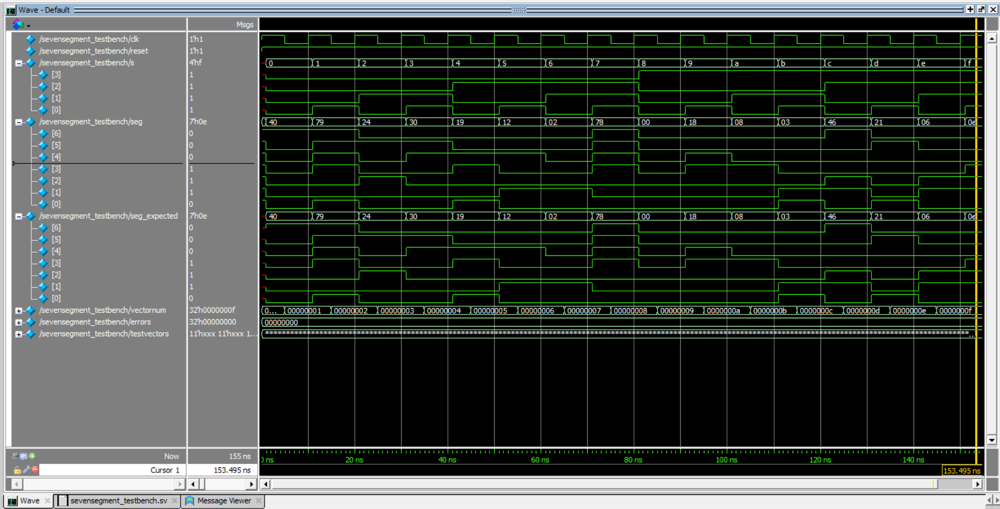

Lab 2: Multiplexed 7-Segment Display
Sebastian Heredia | dheredia@g.hmc.edu | September 10, 2025
Introduction
In this lab, time-divsion multiplexing (DTM) was implemented to drive a single dual 7-segment display with only nine FPGA I/O pins. The hexadecimal values displayed on each half of the dual 7-segment display were added and the sum was displayed as a 5-bit binary number on five external LEDs. Notably, PNP transistors were used to drive sufficient current to power the common anodes of the dual 7-segment display while respecting the FGPA’s current capacity.
In this system, the same hexadecimal signal from a DIP switch was sent to both halves of the dual 7-segment display. By powering only one common anode of the display at a time, only that corresponding side of the 7-segment display would light up. By quickly switching which anodes receiving power, the right and left sides of the display appeared to show two independent numbers simultaneously.
Methods & Design
Lab Setup
Given limited resources, time-multiplexing leverages synchronized timing to allow expensive hardware to be used for different purposes at designated times. Figure 1 shows the physical setup of the lab which included two binary encoded quad DIP switches, one deep red HDSP-521A dual 7-segment showing hexadecimal numbers 0 to F on each side corresponding to the switch inputs, two 2N3906 PNP transistors, and five green LEDs that represent the binary sum of the switch inputs.
Figure 1: Setup of the breadboarded system display 8 and A, and their sum 5'b10010 on the LEDs.
To implement the desired function, the signals shown in Table 1 were used. Notably, the sevensegment.sv module from Lab 1 reused to convert quad DIP switch inputs to visual numbers on the 7-segment displays.
Table 1: Signal name, type, and brief description for each signal used in the project.
| Signal Name | Signal Type | Description |
|---|---|---|
clk |
input | 48MHz clock on FPGA |
reset |
input | Turns off display when held |
s0[3:0] |
input | Switch for left display number |
s1[3:0] |
input | Switch for right display number |
select |
output | Power for left display number |
notselect |
output | Power for right display number |
led[4:0] |
output | 5 LEDS to display sum |
seg[6:0] |
output | Dual 7-segment display segments |
Technical Documentation
The project was contructued using two modules: lab2_dsh.sv and sevensegment.sv. In addition, the HSOSC library was reused to generate a system counter to toggle between powering each side of the display. Figure 2 shows SystemVerilog module hierarchy block diagram.
Figure 2: Block diagram representation of SystemVerilog module hierarchy.
Multiplexing Implentation in lab1_dsh.sv
Given fewer FPGA I/O pins than pins on the dual 7-segment display, a multiplexer was used to select which switch input should be fed into the 7-segment display at a given time. The signal to toggle the multiplexer was the internal variable state was a slowed down version of the HSOSC clock native to the board. In order to synchronize the multiplexing of the switch inputs with their visual numbers on the display, state was directly set to toggle output variables select and notselect which correspond to powering the left and right common anodes of the dual 7-segment display, respectively. Importatnly, state was set to toggle at at a frequency of 240Hz means a given display side flashes 120 per second—a rate faster than the human eye can detect which ensured seamless appearance.
Adding Implentation in lab1_dsh.sv
A simple adder was used to determine the sum of the DIP switch values. The sum was stored in the output variable led and bit LED was assigned a bit such that the sequence would correctly display the sum in binary.
7-Segment Implementation in sevensegment.sv
Identical to Lab 1, the 7-segment display was designed using combinational logic to map all quad DIP switch cases to output number 0 to F on the display. Furthermore, Figure 3 shows the schematic for how the two DIP switches, dual 7-segment display, PNP transistor, and five LEDs were wired to the FPGA. Furthermore, Figure 4 provides justification for all current limiting resistors since the FPGA can sustain a maximum current of 8mA.
Figure 3: Schematic showing the wiring of all componts to the FPGA.
Figure 4: Calculations to justify current limiting resistor values through the PNP transistor base, green LEDs, and dual 7-segment display.
Results & Discussion
The design accomplished all the intended tasks. Testbenches for both lab2_dsh.sv and sevensegment.sv modules were succesfully simulated in Questa to verify correct LED sum, correct segmenet display representation, and that displays toggle between ON and OFF and are never the same value. All 256 addition combinations were simulated in the testbench using a loop. Figure 5 shows that lab2_dsh.sv matches all expectations. Figure 6 shows that sevensegment.sv also matches all expectations.
Figure 5: Multiplexing, adding, and LED displaying features simulated as expected in Questa for lab2_dsh.sv for all combinations of switch inputs.
 Figure 6: All 7-segment display outcomes matched expectation in Questa for sevensegment.sv.
Conclusion & Demo
All designs were successfully implemented. All simulations matched expectation and the physical hardware behaved as intended. The lab took 15 hours to complete.
Beyond reinforcing concepts of time-multiplexing to overcome challenges with limited hardware, I also gained valuable practice with hardware-aware digital design. That is, I learned how to integrate PNP transistors to source current common-anode displays, calculate and justify current-limiting resistor values using datasheets, and synchronize a divided oscillator signal with human perception to achieve a smooth visual output. This lab also strengthened my workflow of simulating modules in Questa prior to hardware implementation, which helped ensure correctness and streamline debugging.
AI Prototype
The purpose of the AI Prototype is to experiment with usign AI as a coding assistant to produce HDL. The following prompt was entered to ChatGPT 5.0.
Write SystemVerilog HDL to time multiplex a single seven segment decoder (that decodes from four bits to a common anode seven segment display) to decode two sets of input bits and drive two sets of seven output bits.
Within 10 seconds of thinking, ChatGPT 5.0 produced a SystemVerilog script that was capable of being synthesized in Lattice Radiant on the first try. Figure 7 below shows the RTL schematic of the generated script. Looking at the schematic, the number of inputs matches expectations as there are two 4-bit inputs, clk, and reset. In terms of outputs, the schematic correctly shows two sets of 7-segment displays as well as toggle bits held in anode[1:0], however, there is an extra set of outputs called seg_bus[6:0] which appears to acts a docking location for the display value before it is output on seg[0] or seg[1]. Nevertheless, seg_bus[6:0] should be an internal variable not an output.
Figure 7: RLT schematic of the SystemVerilog script produced by ChatGPT 5.0.
Within the same AI conversation with the LLM, the following follow-up prompt was asked.
Write SystemVerilog HDL to time multiplex a single seven segment decoder (that decodes from four bits to a common anode seven segment display) to decode two sets of input bits and drive two sets of seven output bits. Use the seven segment decoder and oscillator provided in the attached files.
For some reason, when sharing my Lab 1 files with ChatGPT, it was unable to produce a script capable of being synthesized in Lattice Radiant. I prompted the LLM three times, encouraging it to implement insights from the attached documents and it was never able to correctly do so.